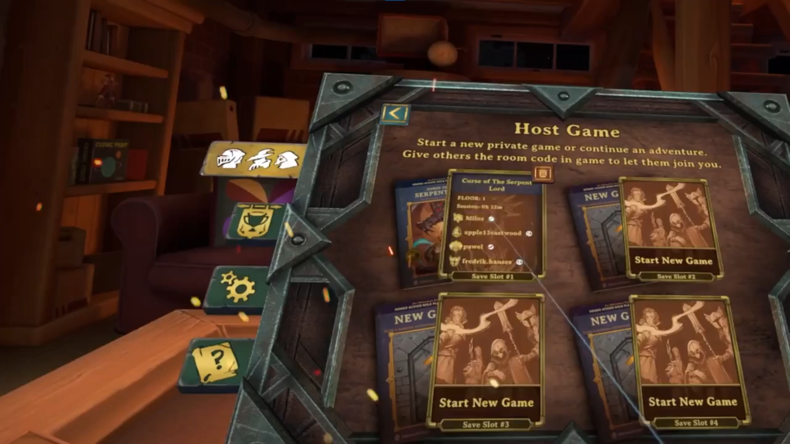

Resolution Games · Released game
Demeo
Demeo is a cross-platform cooperative adventure for up to four players that recreates all of the magic and camaraderie of gathering around a tabletop with friends to do battle against the forces of evil.
- Role
- Game Programmer
- Studio
- Resolution Games
- Engine
- Unity
- Platforms
- VR · PC · PS5 · PS VR2
Virtual Reality
Where it all started
Demeo was built for VR first, and most of my work on it has been about making it feel great in a headset.
I have worked on the VR implementation across headsets, including Meta Quest, PC VR and PS VR2.
Mixed Reality
Bring the dungeon home

In mixed reality, players see their own room through passthrough, with the game board placed in it. Together with spatial anchors, it opened up new ways to play.
I worked on the room decorations: framed pictures on the walls, a plush dragon hanging from the ceiling, and candles and stickers on tables, all placed using the room layout the headset detects.
Defeating a boss in one of the dungeons unlocks a matching poster that goes up on a wall. Every decoration can be moved, scaled, rotated or hidden.
PlayStation 5
Ready for launch day
I joined a small team porting Demeo to PlayStation 5 and PlayStation VR2, where it was released as a launch title for the headset.
My work included the PlayStation Activities integration, PlayStation Plus handling, and audio-based haptics for the PS VR2 Sense controllers, which also made use of their adaptive triggers.
Hand Tracking
Hands-on, from tutorial to endgame
I started out working on hand tracking alongside the feature's original author, and took over responsibility for it after its initial release.
Since then I have added hand tracking support to the tutorial, made accessibility features such as tilt work with hand tracking, and reworked the behaviour of several UI elements so they feel better to use with your hands.
Spatial Anchors
Gather around the same table
Spatial anchors let players in the same physical space share one virtual game board.
I worked on the feature together with its original developer before taking over responsibility for it. The board stays aligned to the same real table for everyone in the room, so avatars and dice rolls match up between the virtual and the real world.
I later ported the feature to Demeo x Dungeons & Dragons: Battlemarked, which meant rewriting parts of it, since that game is built on very different technology.
Auto Saves
Pick up where you left off

When I joined the project, Demeo could only save between levels, and at its initial release it had no saving at all.
Together with another developer I built a mid-level save system for singleplayer, then continued on my own to bring it to multiplayer. It was a highly requested feature among players.
The game now saves automatically after every turn-based action, so players can leave at any time and continue later. The system later carried over to Demeo x Dungeons & Dragons: Battlemarked, where my original co-developer improved it further.
Accessibility
Tilt the table, not the controls
Tilt is a VR feature that reduces neck strain, since the gameplay takes place on a game board below you. It lets players tilt their avatar, with an animated motion, so the board appears to lean towards them.
Improving it was my first task on Demeo. Rotating while tilted didn't work as expected: past around 90° rotating left started turning you right and vice versa, until the controls were fully reversed at the maximum tilt of 180°. After some thought and experimentation I fixed it with a single line of vector multiplication, code that has since been reused in Demeo Battles and Demeo x Dungeons & Dragons: Battlemarked.
Tilting originally hid the environment, so I later added an option to keep it visible, anchored to the player's avatar.